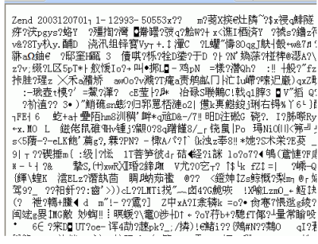
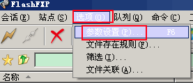
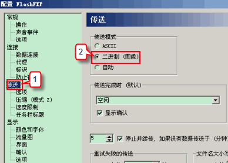
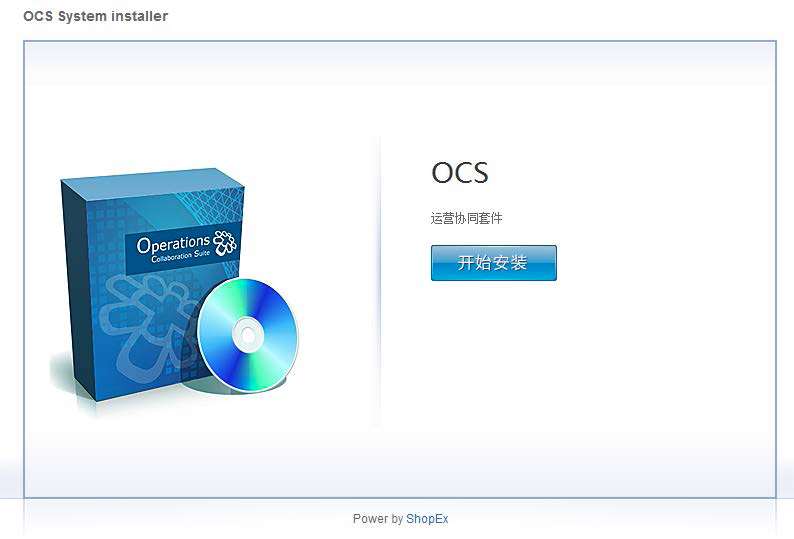
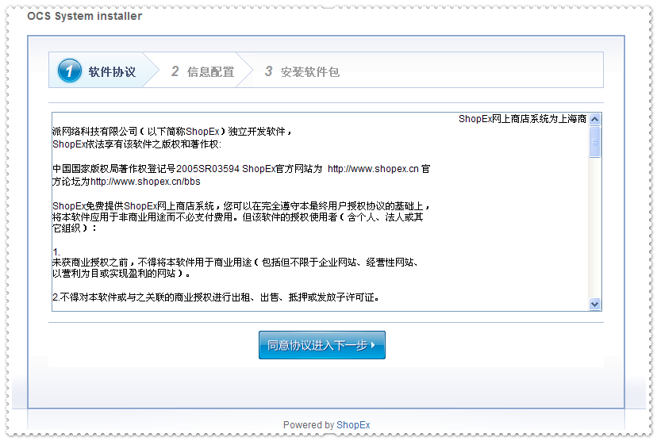
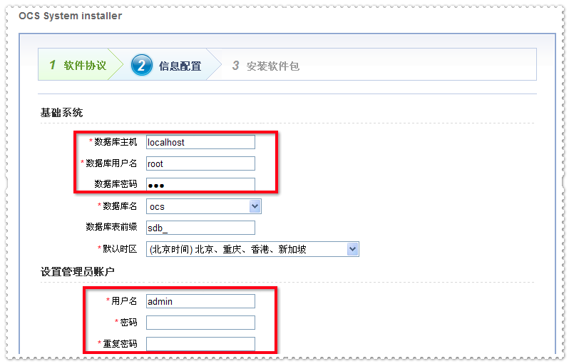
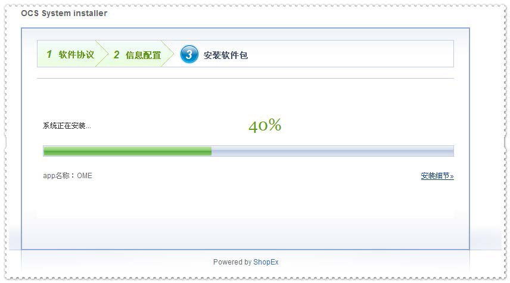
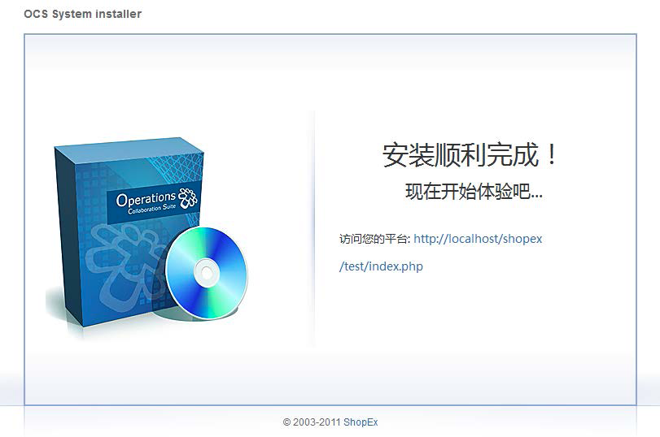

与一般的软件不同，运行OCS需要特殊的环境支持，如果环境不适合，则安装会无法进行。本小节包括5部分，通过本节说明，您可以了解到OCS运行的具体环境要求与参数。
推荐使用软件环境：Linux + Nginx + PHP5.3* + MySQL5.1*
在Php配置文件php.ini中设置开启如下函数，如果不开启，则某些功能会有影响
OCS采用pathinfo做资源定位，所以要求$_SERVER环境变量中必须要有PATHINFO或则ORGI_PATHINFO
一般在apache或者iis下都没有什么问题，但是在nginx下需要对配置文件做一些设置才可以
这些设置主要是在php fast cgi的配置文件中，设置代码为
set $real_script_name $fastcgi_script_name;
if ($fastcgi_script_name ~ "(.+?\.php)(/.+)") {
set $real_script_name $1;
set $path_info $2; }
fastcgi_param SCRIPT_FILENAME $document_root$real_script_name;
fastcgi_param SCRIPT_NAME $real_script_name;
fastcgi_param PATH_INFO $path_info;
/ ../app 基于ECOS上建立的所有的app的集合 ../config 系统配置文件目录，需要设置为可写 ../data 系统运行过程中产生的数据缓存 ../public 用于存放上传的图片、文本 ../script 存放ocs脚本，包含集群部署的升级脚本以及后台定时脚本等
安装OCS系统时，有时会出现以下乱码问题：

说明：OCS核心程序用zend guard进行了加密，安装的服务器必须安装Zend Optimizer 2.5.7以上版本进行解密后才能正常解析并运行OCS程序。
出现上述问题的可能原因：
OCS系统只有安装后才可以正常使用，一般情况下只要满足如下三个条件就可以正常安装了。
本小节包括7部分，通过本节操作，您可以在服务器上顺利安装OCS，并可进行后续操作。
通过ShopEx网站提供的链接或通道，获得OCS安装程序，并解压做好上传准备。
一般系统运维人员会给出服务器的FTP权限或者SSH权限供您上传代码文件，登录服务器后，将文件正确的传输到系统设定的web目录下。如果采用FTP方式传输文件，请注意文件必须使用二进制模式传输。以FlashFXP为例：
依次点击 选项-参数设置

然后在界面中点击 传送，设置传送方式为二进制

如果安装时出现 Unable to read 12321 bytes…..这样的提示，则上传方式肯定不是二进制，请重新设
注意：代码文件中config、data、public目录必须有可写权限
询问系统运维，获取SSH权限，在服务器上设置定时脚本，方式如下：
以root权限执行crontab –u web用户 -e
* * * * * sh /data/httpd/ocs/script/cronjob/crontab.sh /usr/local/php/bin/php >/dev/null
红色部分是系统web服务的用户名、ocs系统的web路径以及php命令执行路径，请配置正确。

点击“开始安装”

浏览协议后继续

请填写相应的数据库配置信息以及管理员账户的设置
安装中

安装完成，填写ShopEx通行证
登录成功
安装完成
